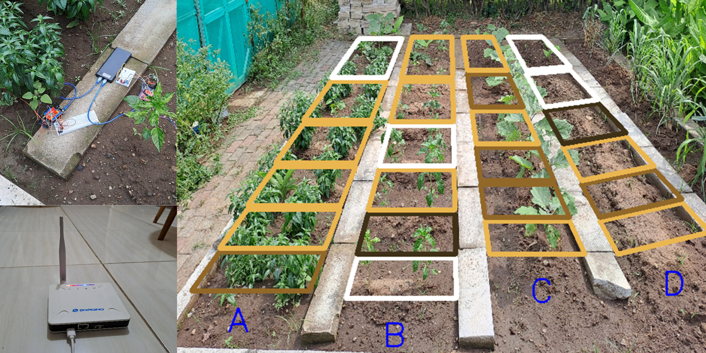
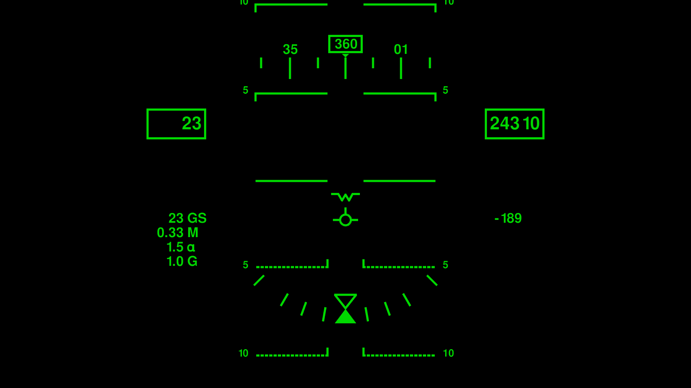
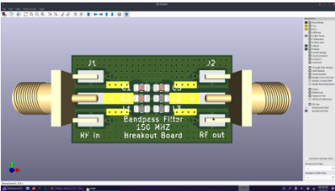
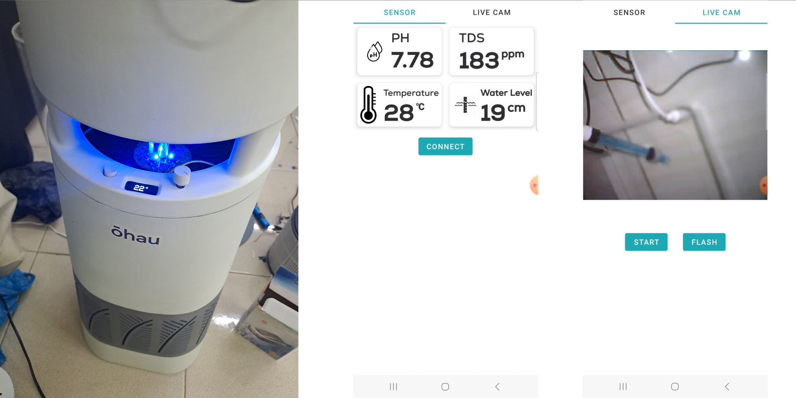
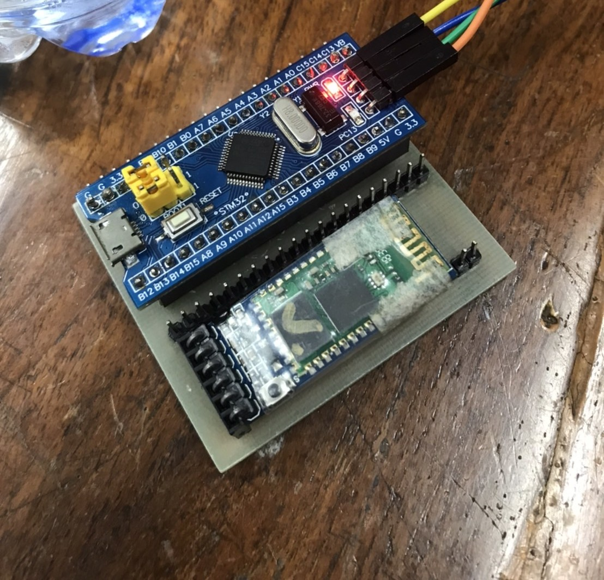
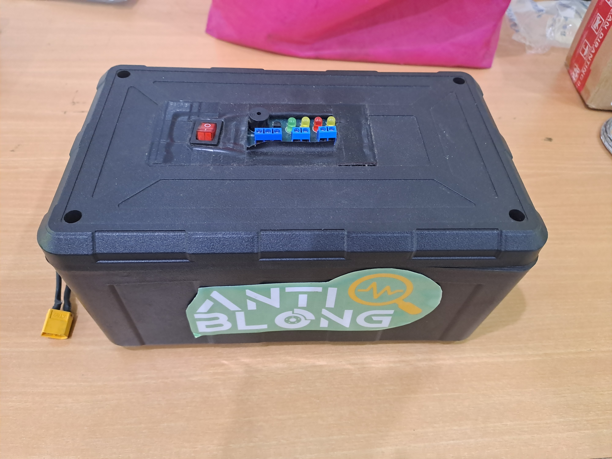
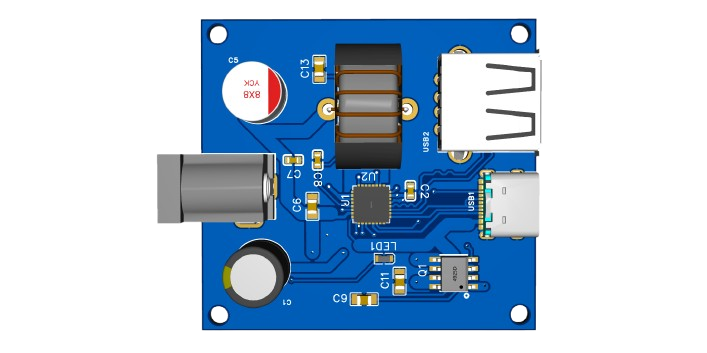

Prototype of a smart irrigation system using LoRaWAN, MQTT, and K-means clustering to map soil moisture and automate water valve control across farm zones.

AHRS-based heading reference on ESP32 reading IMU raw data and computing yaw, pitch, roll for real-time image transformation on a pilot helmet display visor.

RF signal receiver PCB with coplanar waveguide transmission lines designed in KiCad. Implements controlled impedance, ground plane separation, and via stitching for clean RF performance.

Complete IoT system monitoring PH, TDS, temperature, and water level with live ESP32-CAM streaming to a custom Android app via HTTP and JSON API on local network.

STM32-based wearable applying Kalman filter and FFT to detect autism-related repetitive hand movements by measuring flapping frequency from accelerometer and gyroscope data.

ESP32 system monitoring brake lining temperature and road slope via IMU and optocoupler sensors, triggering multi-mode alerts and Blynk mobile push notifications through GSM modem.

Custom PCB designed in EasyEDA featuring a USB Power Delivery IC supporting Apple, Samsung, and OPPO fast-charging protocols with dual USB-A and USB-C output from 12/24V input.